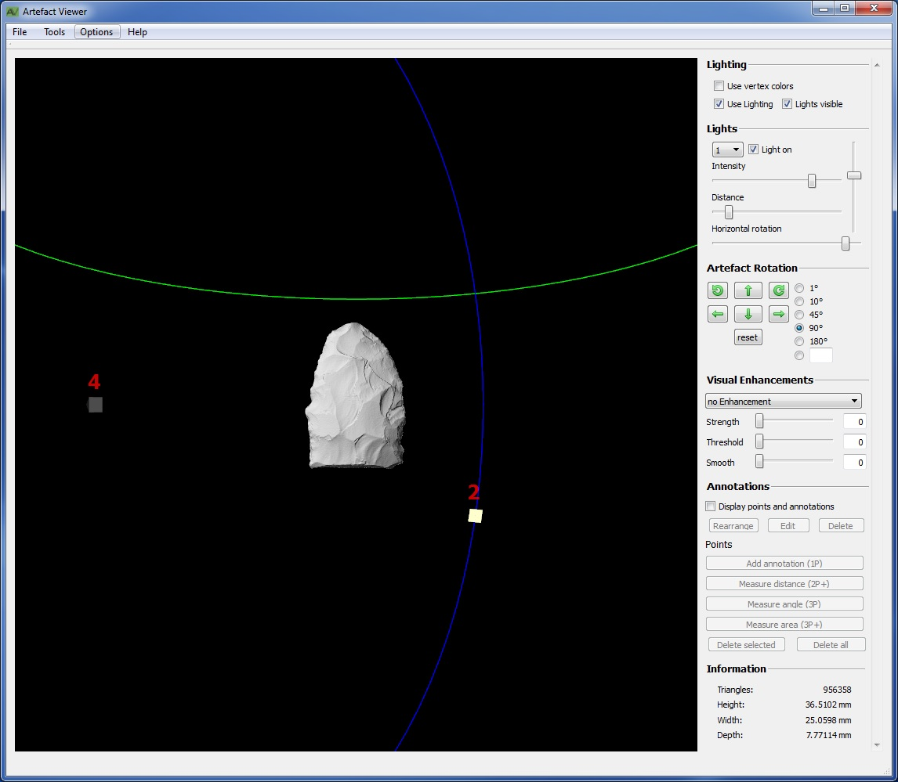
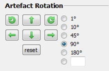
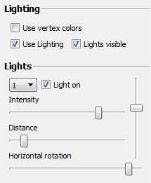
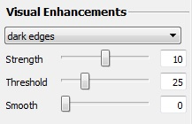
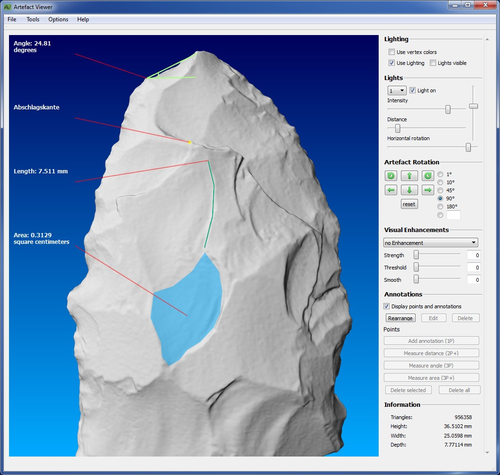

Artefact Viewer
Handbuch
Version 0.1
Inhaltsverzeichnis
Bei Programmstart werden zunächst nur die Lichtquellen angezeigt. Ansonsten ist das Hauptfenster erst mal leer.
Um eine Datei zu öffnen, gibt es in der Menüleiste unter „File“ den Eintrag „Open“. Im sich öffnenden Dateiauswahlfenster muss eine PLY- oder eine STL-Datei ausgewählt werden.Nach dem Laden der Datei wird deren Inhalt angezeigt. Dabei ist zu beachten: Wenn der Datei eine XML-Datei mit gespeicherten Informationen zur Ansicht beilag, kann die Anzeige vom folgenden Bild abweichen.

Wen der komplett schwarze Hintergrund stört, kann über das Menü „Options“ und „Background Color“ wählen und sich dort einen Farbverlauf erstellen. Dabei ist zunächst die untere Farbe auszuwählen, dies zu bestätigen und dann die obere Farbe auszuwählen. Ist ein einfarbiger Hintergrund gewünscht, muss zweimal dieselbe Farbe gewählt werden. Das folgende Bild zeigt einen möglichen Hintergrund.
Das Artefakt kann auf drei Arten ausgerichtet werden. Mit der Maus, mit Buttons in der Benutzeroberfläche und mit Tastaturkürzeln.
Mit der rechten Maustaste kann das Artefakt gedreht werden. Dabei wird die sogenannte Trackball-Metapher verwendet. über dem Fenster befindet sich eine imaginäre Halbkugel, die mit der Maus manipuliert wird. Dies ermöglicht Drehungen um alle drei Koordinatenachsen.
Wird die Shift-Taste auf der Tastatur gedrückt gehalten, kann das Artefakt mit der rechten Maustaste verschoben werden. Dies dient der Erkundung von speziellen Objekten wie Wänden, die aufgrund ihrer Größe nicht durch die normale Mausnavigation abgedeckt werden können, und auch kleinen, gebogenen Artefakten, bei denen ein äußerer Teil des Artefakts den zu betrachten inneren Teil verdeckt.

Auch die Buttons in der Benutzeroberfläche ermöglichen Drehungen um alle drei Koordinatenachsen. Die Pfeile nach links und rechts drehen um die y-Achse, die Pfeile nach oben und unten um die x-Achse und die kreisförmigen Pfeile drehen um die z-Achse. Der Winkel, um den pro Mausklick gedreht wird, kann mit Hilfe der Radio-Buttons rechts neben den Pfeilen eingestellt werden. Der unterste Radio-Button erlaubt die Eingabe eines Benutzerdefinierten Winkels. Mit dem Reset-Button werden sowohl die Rotation als auch dier Verschiebung des Objekts zurückgesetzt
Als letzes kann das Objekt auch mit der Tastatur gedreht werden. Die Pfeiltasten haben die gleiche Funktion wie die Buttons in der graphischen Benutzeroberfläche. Zusätzlich können die Zahltasten 4 und 6 wie die Pfiele nach links und rechts, und die Zahltasten 2 und 8 wie die Pfeile nach oben und unten benutzt werden. Drehungen um die z-Achse werden mit den Zahltasten 7 und 9 ausgeführt.
Um das Artefakt richtig in Szene zu setzen, kann nun die Beleuchtung eingestellt werden. Wichtig ist, dass bis hierhin die Ausrichtung des Artefakts abgeschlossen ist, denn bei einmal eingerichteter Beleuchtung würde einer weitere Drehung des Objekts natürlich dazu führen, dass die bereits zufriedenstellend ausgeleuchteten Bereiche wieder verschoben werden.
Um die Beleuchtung einzustellen, muss sie über das Häkchen „Use Lighting“ aktiviert sein. In der Dropdownliste unter „Lights“ kann jede der vier Lampen einzeln ausgewählt werden, um sie zu konfigurieren, bleiben wir jedoch zunächst bei Lampe 1.
Jede Lampe kann ein- und ausgeschaltet werden. Unabhängig davon kann die Darstellung der Repräsentationen der Lampen im 3D-Bereich in Form von rudimentären Lampenschirmen angezeigt oder versteckt werden („Lights visible“). Solange die Lampe ausgerichtet wird, ist es nützlich, sie im 3D-Raum auch zu sehen. Sollen später Screenshots gemacht werden, können die Lampen versteckt werden.
Intensity regelt die Helligkeit der Lampe, Distance regelt die Entfernung der Lampe zum Objekt.
Um die übrigen zwei Regler zu verstehen, muss man wissen, dass die Lampe sich immer auf einer Kugelhülle um das Objekt bewegt. So lässt der Regler „Horizontal Rotation“ die Lampe auf einer Kreisbahn um das Artefakt fliegen, die horizontal im Raum liegt (grüner Kreis), während der letzte verbleibende und unbeschriftete Regler die Kamera – verglichen mit der Erde – zwischen Nordpol und Südpol hin und her bewegt (blauer Kreis).
Die visuellen Verbesserung dienen dazu, die Wahrnehmbarkeit von Oberflächenmerkmalen zu erhöhen. Dazu werden bestimmte Bereiche abgedunkelt, was bisweilen einen Effekt ähnlich des Schattenwurfes erzeugen kann, jedoch nicht von Lampen abhängig ist. „Dark Edges“ und „Bright Edges“ färben scharfe Kanten dunkel bzw. hell, was Ähnlichkeit mit Bleistiftstrichen hat, die die Kanten darstellen. „Dark Valleys“ dunkelt Vertiefungen ab. Vor allem letzterer Algorithmus ist auch gut mit Beleuchtung kombinierbar um Schatten zu verstärken.
Über „Strength“ kann die Stärke der Schwärzung eingestellt werden. „Threshold“ gibt einen Schwellwert an, ab dem Vertices eingefärbt werden. Vertices deren Krümmung unter dem Schwellwert liegt, werden von dem Algorithmus nicht beachtet. Über „Smooth“ kann eingestellt werden, wie sehr das Ergebnis geglättet wird. Beim Glätten beeinflusst die Helligkeit von Knoten auch die Helligkeit der Nachbarknoten. Der Smoothing-Wert gibt an wie viele Vertices in der Nachbarschaft des aktuellen Vertex betrachtet werden. Bei einem Wert von 3, werden beispielsweise alle Vertices betrachtet die 3 „Schritte“ weit entfernt sind. Bei hohen Werten kann das Berechnen des Smoothings sehr lange dauern!
Für jedes Artefakt sollten verschiedene Einstellungen ausprobiert werden, um ein optimales Ergebnis zu erreichen.
Um Vermessungen vorzunehmen und Kommentare zu schreiben, müssen diese zunächst mit dem Häkchen „Display points and annotations“ eingeschaltet werden. Beim Vermessen des Objekts wird angenommen, das alle Koordinaten in mm angegeben sind.
Um eine Anmerkung zu erstellen, muss im einfachsten Fall das Artefakt an der zu kommentierenden Stelle angeklickt werden, wodurch an der Stelle ein blauer Punkt gesetzt wird. Ein gesetzter Punkt führt dazu, dass die Schaltfläche „Add annotation“ aktiviert wird. Bei Betätigung der Schaltfläche wird in einem kleinen Fenster die Möglichkeit geboten einen Text einzugeben. Wird dieser bestätigt, kann im Anschluss eine Farbe für den Punkt ausgesucht werden. Ist diese ebenfalls bestätigt, ist der Vorgang abgeschlossen. Die Anmerkung steht nun links oben im 3D-Anzeigebereich und zeigt mit einer Linie auf den betreffenden Punkt. Alle diese als 2D-Overlay gezeichneten Elemente können nicht vom Artefakt verdeckt werden. Sie bleiben demzufolge auch sichtbar, wenn sie sich auf der Rückseite des Artefakts befinden.
Soll eine Strecke gemessen werden, müssen dafür mindestens zwei Punkte angegeben werden. In dem Fall wird die direkte Verbindung zwischen den Punkten, also der Vektor, in seiner Länge gemessen und das Ergebnis in einem Fenster angezeigt, welches wiederum die Möglichkeit eröffnet, daraus eine Anmerkung zu generieren. Ist dies nicht gewünscht, kann der Wert einfach abgelesen und dann abgebrochen werden. Es wird dann keine Anmerkung generiert und auch keine Linie eingezeichnet. Soll eine komplexe Strecke gemessen werden, können dazu beliebig viele Punkte angeklickt werden, die Strecke wird als Summe der Teilstrecken berechnet und angezeigt.
Exakt drei Punkte müssen gesetzt werden, um einen Winkel zu messen. Dabei wird der Winkel für drei Punkte A, B und C am Punkt A bestimmt. Auch hier wird der Wert in einem Fenster angezeigt und die Möglichkeit der Generierung einer Anmerkung geboten.

Drei und mehr Punkte können auch zur Berechnung einer Fläche benutzt werden. Zuverlässig funktioniert dies, wenn es sich um konvexe Formen handelt, also idealerweise einen Kreis. Auch davon abweichende Formen können gemessen werden, es muss jedoch berücksichtigt werden, wie die Flächenmessung vonstatten geht. Aus allen Punkten, die gesetzt werden, wird am Ende ein Mittelwert gebildet und daraus ein zusätzlicher Punkt generiert. Er bildet den Mittelpunkt eines Dreiecksfächers, an dem alle gesetzten Punkte teilnehmen. Hieraus ergibt sich die Notwendigkeit, die Punkte so zu setzen, dass keine „zu“ konkave Fläche entsteht. Wie das obige Bild zeugt, können leicht konkave Flächen gemessen werden, aber nur, wenn der automatisch berechnete Mittelpunkt so liegt, dass man von ihm eine gerade Verbindung innerhalb der zu messenden Fläche zu jedem Randpunkt ziehen könnte. Als Trick bietet es sich an, wenn unsicher ist, ob der Mittelpunkt wie hier weit genug unten liegt, dort unten ein paar mehr Randpunkte zu setzen, damit der Mittelpunkt als Mittel dieser Punkte weiter runter wandert. Die Reihenfolge, in der die Randpunkte gesetzt werden, ist nicht wichtig. Sobald die Flächenberechnung gestartet wird, werden die Randpunkte automatisch sortiert und eine ausreichend konvexe Fläche berechnet.
Zu allen Messwerkzeugen ist anzumerken, dass die gemessene Größe stets als Standardtext vorgegeben ist, damit diese komfortabel übernommen werden kann. Sie kann selbstverständlich beliebig ergänzt, geändert oder gänzlich gelöscht werden.
Um leichter mit den verschiedenen Anzahlen von Punkten zurecht zu kommen, ist als Gedächtnisstütze auf jeder Schaltfläche die notwendige Punktzahl in Klammern erläutert. (3P+) heißt also beispielsweise, die Schaltfläche kann benutzt werden, wenn drei oder mehr Punkte gesetzt wurden.
Solange die Punkte noch gesetzt werden und keine Schaltfläche angewählt wurde, sind sie noch veränderbar. So können sie mit der linken Maustaste geklickt und gezogen werden, wenn ihre Position korrigiert werden muss. Der aktuell markierte Punkt (weiß dargestellt) kann mit der Schaltfläche „Delete selected“ gelöscht werden, alle Punkte mit „Delete all“.
Ist die Anmerkung erst einmal bestätigt, sind die Punkte fixiert und können nicht mehr geändert werden. Allerdings kann die Anmerkung selber noch bearbeitet werden. Dazu ist die betreffende Anmerkung selber anzuklicken und die Schaltfläche „edit“ zu verwenden. Sie führt wieder zum Eingabefenster für Anmerkungen und zur Farbauswahl. Ebenso verhält es sich mit „Delete“, was die Anmerkung und die zugehörigen Punkte löscht.
Wenn viele Anmerkungen existieren, bleibt es spätestens wenn das Objekt gedreht wird nicht aus, dass sich die Linien von den Texten zu den Punkten überschneiden. Daher kann, wenn das Objekt fertig gedreht wurde, die Schaltfläche „Rearrange“ angeklickt werden. Dies bewirkt, dass die Höhen der relevanten Punkte auf dem Bildschirm ermittelt werden und die Anmerkungen dementsprechend umsortiert werden. Danach sind die Linien meist entwirrt. Dies ist jedoch keine permanente Lösung. Wird das Objekt gedreht, können die Linien sich erneut überschneiden.
Um den aktuellen Inhalt des 3D-Bereichs als Bild zu speichern, steht im Menü unter „Tools“ den Punkt „Screenshot“. Es stehen diverse gängige Formate zur Auswahl, um den Screenshot abzuspeichern. Screenshots sind in ihrer Auflösung durch den verwendeten Monitor begrenzt. Um Abbildungen mit höherer Qualität zu erstellen, verwenden Sie bitte Offscreen Renderings
Ebenfalls im im Menü unter „Tools“ finden Sie den Punkt „Offscreen“ Es öffnet sich ein weiteres Fenster in dem sie die Qualität des Offscreen Renderings angeben können. Offscreen Renderings werden immer im PNG-Format gespeichert und können maximal 8192x8192 Pixel grofl sein. Die Qualität gibt an, ob und wie startk komprimiert verwendet werden soll, was allerdings verlustbehaftet sein kann. Je niedrieger der Wert für die Qualität ist, desto stärker ist die Kompression
Wenn ein Artefakt in Szene gesetzt wurde, können die Einstellungen zu Beleuchtung, Kameraposition, Farben und Anmerkungen gespeichert werden, indem „File“ und „Save“ gewählt wird. Dabei wird die PLY-Datei nicht geändert, es wird nur im gleichen Verzeichnis eine gleichnamige Datei mit der Endung XML gespeichert, weswegen auch kein Datei-Speichern-Dialog angezeigt wird. Eventuell schon vorhandene XML-Dateien werden dabei nach einer Sicherheitsabfrage überschrieben.